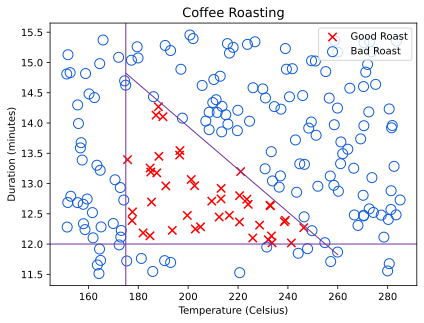
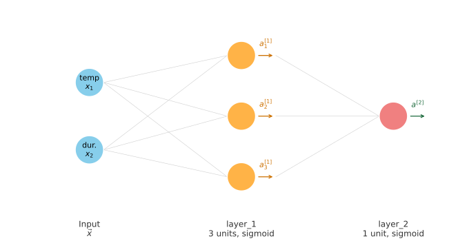
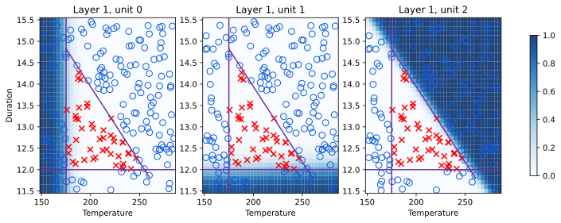
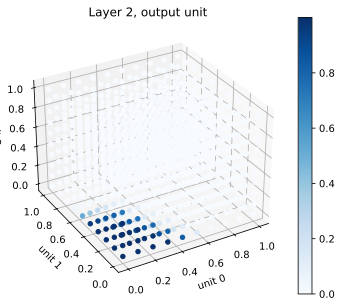
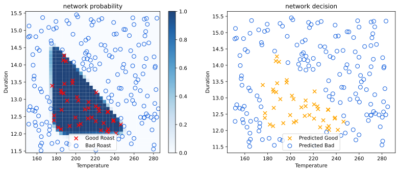

TensorFlow Implementation
machine-learning
neural-networks
Forward propagation as real TensorFlow code, plus how NumPy matrices, row and column vectors, and TensorFlow tensors represent the same data differently.
You have seen the math of forward propagation and tried it yourself in the Neurons and Layers lab for a single neuron. This page shows how to write the same forward propagation steps as real code for a full multi-layer network, using TensorFlow.
TensorFlow and PyTorch
TensorFlow is one of the leading frameworks for implementing deep learning algorithms. The other popular framework is PyTorch. Both are widely used in industry and research. This specialization focuses on TensorFlow.
One of the remarkable things about neural networks is that the same algorithm, forward propagation, can be applied to many different applications. The rest of this page walks through two examples: a small coffee roasting example with two features, and a revisit of the handwritten digit example from the previous page.
Review Questions
1. Besides TensorFlow, what is the other popular deep learning framework mentioned?
TipAnswer
PyTorch.
Coffee Roasting Example
Suppose you roast coffee beans at home. Two parameters you control during roasting are the temperature at which you heat the beans and the duration, how long you roast them for. A training set can be built from many roasting attempts, each labeled by whether the resulting coffee tasted good (\(y = 1\)) or not (\(y = 0\)).
A reasonable way to think about this dataset is that roasting at too low a temperature, or for too short a duration, leaves the beans undercooked. Roasting for too long, or at too high a temperature, burns the beans and leaves them overcooked. Only a small region of temperature-duration combinations produces good coffee. Coffee Roasting at Home suggests keeping the duration between 12 and 15 minutes, with temperature between 175 and 260 degrees Celsius, and as temperature rises, duration should shrink.
This example is simplified from real coffee roasting, but simplified or not, real machine learning projects have used similar ideas to optimize coffee roasting. There are 200 examples, each with 2 features (temperature, duration) and 1 label. You can download the dataset here, a plain text file with one example per line, comma-separated as temperature, duration, label. This is the same dataset used in the Coffee Roasting lab later on this page.
The task is: given a feature vector \(\vec{x}\) with temperature and duration, say 200 degrees Celsius for 17 minutes, use forward propagation in a neural network to predict whether that setting produces good coffee.
Review Questions
1. What are the two input features in the coffee roasting example?
TipAnswer
Temperature and duration (how long the beans are roasted).
1. Why does roasting for too long or at too high a temperature produce bad coffee?
TipAnswer
The beans become overcooked, or burnt.
Writing the Coffee Roasting Network in Code
The diagram below is the network built step by step over the rest of this section, labeled with the same variable names the code uses.

\(\vec{x}\) enters on the left with 2 entries, temperature and duration. layer_1 turns that into \(\vec{a}^{[1]}\), three activations, one per unit, each arrow showing the value flowing out of its neuron. layer_2 reads all three of those numbers and produces the single output \(a^{[2]}\). Thresholding \(a^{[2]}\) at 0.5 gives the final prediction \(\hat{y}\). The rest of this section builds exactly this, one line of code at a time.
To write this network in TensorFlow, first import the libraries the code needs. numpy stores the input numbers in arrays and does the underlying math. tensorflow is the deep learning library itself. Dense is the specific piece of TensorFlow that builds the layer type you have already learned about, where every unit reads the entire input and runs the sigmoid formula.
import numpy as np
import tensorflow as tf
from tensorflow.keras.layers import Dense
import logging
logging.getLogger("tensorflow").setLevel(logging.ERROR)
tf.autograph.set_verbosity(0)The last two lines just quiet down some informational messages that TensorFlow prints by default, so the output in this lesson stays easy to read. They do not affect the network itself.
As you learn more about neural networks, you will meet other layer types besides Dense, but every example on this page uses Dense layers.
Next, build the input \(\vec{x}\). It holds the two feature values for one roasting attempt, 200 degrees Celsius for 17 minutes.
x = np.array([[200.0, 17.0]])Notice the double square brackets. Just like in the Neurons and Layers lab, TensorFlow layers expect 2D input: one row per training example, one column per feature. Writing x = np.array([200.0, 17.0]) with single brackets would give a flat list of two numbers, which is the wrong shape. The double brackets [[200.0, 17.0]] make x a table with one row (one example) and two columns (temperature, then duration).
The first hidden layer has 3 units, using the sigmoid activation function.
tf.random.set_seed(3)
layer_1 = Dense(units=3, activation="sigmoid")
a1 = layer_1(x)
print(a1)tf.Tensor([[1. 1. 1.]], shape=(1, 3), dtype=float32)layer_1 is itself a function. Calling it on x computes \(\vec{a}^{[1]}\), a list of three numbers, since layer 1 has three units. In the lecture, this was illustrated with example numbers like 0.2, 0.7, 0.3, just to show the shape of the computation. Here the printed values land very close to exactly 0 or 1, not smoothly in between. That happens because x = [200, 17] has large, unscaled values, and a fresh, untrained layer starts with small random weights, so \(\vec{w} \cdot \vec{x} + b\) can already be a large positive or negative number, which pushes the sigmoid to saturate near its extremes. The layer has not been trained yet, so none of these numbers mean anything about good or bad coffee. They only show the shape of the computation, one output per unit.
The second hidden layer has 1 unit, also with a sigmoid activation, and it reads \(\vec{a}^{[1]}\) as its input.
layer_2 = Dense(units=1, activation="sigmoid")
a2 = layer_2(a1)
print(a2)tf.Tensor([[0.58185]], shape=(1, 1), dtype=float32)a2 is the network’s output. If you want a binary prediction rather than a probability, threshold it at 0.5.
y_hat = 1 if a2 >= 0.5 else 0
print(y_hat)1That is the key structure of forward propagation in TensorFlow: build each Dense layer, then call it on the previous layer’s output to get the next activation, and optionally threshold the final activation. Some details are left out here, such as how to load trained weights into a layer. Those details are covered in the coffee roasting lab.
Review Questions
1. What does calling layer_1(x) compute?
TipAnswer
\(\vec{a}^{[1]}\), the activation vector output by layer 1, one number per unit in that layer.
1. Why do the printed values of a1 land close to exactly 0 or 1 instead of meaningful predictions?
TipAnswer
The layer’s weights were just randomly initialized and have not been trained yet, and the raw inputs (200 and 17) are large enough to push \(\vec{w} \cdot \vec{x} + b\) far from zero, saturating the sigmoid. Meaningful predictions require trained parameters.
1. If the input features are temperature (in Celsius) and duration (in minutes), how do you write the code for the first feature vector \(\vec{x}\), 200 degrees for 17 minutes?
(A) x = np.array([[200.0 + 17.0]])
(B) x = np.array([[200.0, 17.0]])
(C) x = np.array([[200.0], [17.0]])
(D) x = np.array([['200.0', '17.0']])
TipAnswer
(B) is correct. It is a 1 by 2 matrix, one row (one example) and two columns (temperature, then duration).
Option (A) adds the two numbers together instead of listing them, giving a single value, not two features.
Option (C) is a 2 by 1 column vector, two rows and one column. That would mean 2 separate training examples with 1 feature each, not 1 example with 2 features.
Option (D) wraps the numbers in quotes, making them text strings instead of numbers.
Matrices and Vectors in NumPy
Earlier, x was written as np.array([[200.0, 17.0]]), with double square brackets. Why double brackets, and not just np.array([200.0, 17.0])? Answering that means taking a short detour into how NumPy stores matrices and vectors.
Part of the reason for this detour is historical. NumPy is a much older library, first built as a standard tool for linear algebra in Python. TensorFlow came much later, built by the Google Brain team. The two libraries grew up separately, so they ended up with slightly different conventions for representing data. Knowing both conventions helps you write correct code and avoid confusing shape errors.
A matrix is just a 2D array of numbers, a grid with rows and columns. By convention, a matrix’s dimensions are always written as rows by columns. Here is a matrix with 2 rows and 3 columns, so it is called a 2 by 3 matrix.
\[ M = \begin{bmatrix} 1 & 2 & 3 \\ 4 & 5 & 6 \end{bmatrix} \]
In NumPy, the exact same matrix is written like this.
m_2x3 = np.array([[1, 2, 3],
[4, 5, 6]])
print(m_2x3)
print(m_2x3.shape)[[1 2 3]
[4 5 6]]
(2, 3)The outer square brackets group the rows together, and each inner pair of brackets is one row. [1, 2, 3] is the first row, [4, 5, 6] is the second row, exactly matching \(M\) above, 2 rows tall and 3 columns wide, the shape reported by m_2x3.shape.
Here is a different matrix, with 4 rows and 2 columns, so it is a 4 by 2 matrix.
\[ M = \begin{bmatrix} 1 & 2 \\ 3 & 4 \\ 5 & 6 \\ 7 & 8 \end{bmatrix} \]
m_4x2 = np.array([[1, 2],
[3, 4],
[5, 6],
[7, 8]])
print(m_4x2)
print(m_4x2.shape)[[1 2]
[3 4]
[5 6]
[7 8]]
(4, 2)4 rows tall, 2 columns wide, the same shape reported by m_4x2.shape.
Matrices can have all kinds of dimensions, including ones where a row or column count is just 1. The coffee roasting x is one such case.
\[ \text{row vector} = \begin{bmatrix} 200 & 17 \end{bmatrix}, \qquad \text{column vector} = \begin{bmatrix} 200 \\ 17 \end{bmatrix} \]
Same two numbers, same rule (rows by columns), just arranged two different ways.
row_vector = np.array([[200.0, 17.0]])
print(row_vector.shape)
column_vector = np.array([[200.0], [17.0]])
print(column_vector.shape)(1, 2)
(2, 1)row_vector is a 1 by 2 matrix, one row and two columns. It has the same two numbers as x from the coffee example, arranged the same way. A matrix with just one row is also called a row vector. column_vector is a 2 by 1 matrix, the same two numbers, but arranged as two rows and one column. A matrix with just one column is called a column vector.
Now contrast both of those with a plain 1D array. Mathematically, this is simply \(\vec{x} = (200, 17)\), with no rows-by-columns grid at all, unlike the two matrices above. This is exactly the convention used for \(\vec{x}\) in linear regression and logistic regression back in Course 1.
one_d = np.array([200.0, 17.0])
print(one_d.shape)(2,)Built with only a single pair of square brackets, a 1D array has no rows or columns. It is just a flat list of numbers.
So there are two different conventions for the same two numbers, 200 and 17: a flat 1D array with one pair of brackets, or a 2D matrix (a row vector) with two pairs of brackets. TensorFlow’s convention is to represent data as 2D matrices, not 1D arrays. TensorFlow was built to handle very large datasets, and representing data as matrices lets it run its computations more efficiently internally. That is why x for a TensorFlow layer is written np.array([[200.0, 17.0]]), a 1 by 2 matrix, rather than the 1D array style from Course 1.
Review Questions
1. What are the dimensions of a matrix with 3 rows and 5 columns, and how is that written?
TipAnswer
A 3 by 5 matrix, written rows by columns.
1. What is the difference between a row vector and a column vector?
TipAnswer
A row vector is a matrix with just one row (shape like \(1 \times n\)). A column vector is a matrix with just one column (shape like \(n \times 1\)). Both are 2D matrices, just arranged differently.
1. Why does TensorFlow use 2D matrices to represent data instead of the 1D arrays used in Course 1?
TipAnswer
TensorFlow was designed to handle very large datasets, and representing data as matrices lets it run its internal computations more efficiently.
1. Write \(\begin{bmatrix} 9 & 10 \end{bmatrix}\) and \(\begin{bmatrix} 9 \\ 10 \end{bmatrix}\) in NumPy, and give the shape of each.
TipAnswer
\(\begin{bmatrix} 9 & 10 \end{bmatrix}\) is np.array([[9, 10]]), shape (1, 2), a row vector. \(\begin{bmatrix} 9 \\ 10 \end{bmatrix}\) is np.array([[9], [10]]), shape (2, 1), a column vector.
Tensors: TensorFlow’s Data Type
Everything in the previous section, m_2x3, row_vector, one_d, was a plain NumPy array. But a1 and a2 from the coffee roasting example were not built with np.array(...). They came out of calling layer_1(x) and layer_2(a1), a TensorFlow layer. Does TensorFlow hand back a NumPy array too, or something else?
To see the difference clearly, compare a NumPy array of similar numbers side by side with a1.
example_np = np.array([[0.2, 0.7, 0.3]])
print(example_np)[[0.2 0.7 0.3]]print(a1)tf.Tensor([[1. 1. 1.]], shape=(1, 3), dtype=float32)Those two print statements look quite different. example_np prints as a plain list of numbers, array([[0.2, 0.7, 0.3]]). But a1 prints as tf.Tensor([[...]], shape=(1, 3), dtype=float32), with extra labels attached. That is because a1 is not a NumPy array. It is a tf.Tensor, TensorFlow’s own data type.
Break down what those extra labels mean, one at a time.
print(a1.shape)(1, 3)shape=(1, 3) means the same thing it meant for NumPy arrays in the previous section, a 1 by 3 matrix, one row and three columns, matching the 3 units in layer 1.
dtype=float32 describes the kind of number stored, not the shape. float32 means each number is a decimal (a floating-point number) stored using 32 bits of computer memory. NumPy arrays carry a dtype too, TensorFlow just always prints it alongside the values.
So a tensor is a data type that the TensorFlow team created to store and compute on matrices efficiently. For the purposes of this course, you can just think of a tensor as TensorFlow’s own way of representing a matrix, dressed up with a couple of extra printed labels. Whenever you see the word “tensor,” think “matrix.”
Since a1 is a tensor and not a NumPy array, code written for NumPy might not accept it directly. Convert a tensor back into an ordinary NumPy array with .numpy().
print(a1.numpy())[[1. 1. 1.]]That output matches example_np from the very first cell in this section, a plain NumPy array again, no tf.Tensor wrapper, no shape= or dtype= labels printed alongside it.
The same pattern holds for a2, the output of the second layer. It has just one unit, so it comes out as a 1 by 1 matrix, technically still 2D, just with a single row and a single column.
print(a2)
print(a2.shape)
print(a2.numpy())tf.Tensor([[0.58185]], shape=(1, 1), dtype=float32)
(1, 1)
[[0.58185]]So when a NumPy array is passed into a TensorFlow layer, TensorFlow converts it into its own internal tensor format to compute with. When you read a result back out, you can keep it as a tensor, or convert it back into a NumPy array with .numpy(). Needing this conversion is a bit of an unfortunate side effect of NumPy and TensorFlow having been built years apart by different teams, but it is just something to be aware of as you write neural network code.
Review Questions
1. When you print() a plain NumPy array versus a TensorFlow tensor holding the same numbers, what is different about the output?
TipAnswer
A NumPy array prints as a plain array([[...]]). A tensor prints as tf.Tensor([[...]], shape=..., dtype=...), with the shape and data type labels attached.
1. What does a1.shape return, and what does it mean?
TipAnswer
(1, 3), meaning a1 is a 1 by 3 matrix, one row and three columns, one number per unit in layer 1.
1. What is a tensor?
TipAnswer
TensorFlow’s own data type for storing and computing on matrices efficiently. For this course, you can think of a tensor as just TensorFlow’s way of representing a matrix.
1. How do you convert a TensorFlow tensor back into a NumPy array?
TipAnswer
Call .numpy() on the tensor, for example a1.numpy().
Revisiting the Handwritten Digit Example
The same pattern applies to the handwritten digit network from the previous page. Here \(\vec{x}\) is the list of 64 pixel intensity values.
x_digit = np.random.default_rng(0).integers(0, 256, size=(1, 64)).astype("float32")
tf.random.set_seed(3)
layer_1 = Dense(units=25, activation="sigmoid")
a1 = layer_1(x_digit)
layer_2 = Dense(units=15, activation="sigmoid")
a2 = layer_2(a1)
layer_3 = Dense(units=1, activation="sigmoid")
a3 = layer_3(a2)
print(a3)tf.Tensor([[0.5380724]], shape=(1, 1), dtype=float32)Layer 1 is a dense layer with 25 units, matching the first hidden layer size from the previous page. Layer 2 has 15 units, matching the second hidden layer. Layer 3 is the third and final dense layer, the single output unit. Calling each layer on the previous layer’s output carries out one step of forward propagation, from \(\vec{x}\) to \(\vec{a}^{[1]}\), to \(\vec{a}^{[2]}\), to \(a^{[3]}\). As before, you can optionally threshold \(a^{[3]}\) to get a binary prediction \(\hat{y}\).
Review Questions
1. In the digit example, how many units does layer_3 have, and why?
TipAnswer
1 unit. It is the output layer, which reports a single probability, the chance the digit is a 1.
1. What input does layer_2 take, and what does it output?
TipAnswer
It takes \(\vec{a}^{[1]}\) (the 25 numbers from layer 1) as input and outputs \(\vec{a}^{[2]}\), a list of 15 numbers.
You now know how to build individual Dense layers, call them in sequence to carry out forward propagation, and read the resulting tensors back out as NumPy arrays. The layers built so far were freshly created and untrained, so their predictions did not mean anything. Next, these pieces come together to build, train, and use a complete neural network for real.
Building a Neural Network
Every example so far on this page did forward propagation explicitly: create layer_1, call it on x to get a1, create layer_2, call it on a1 to get a2. That is one perfectly valid way to run a network, one layer at a time, by hand. TensorFlow also offers a second, simpler way to build a whole network at once, called Sequential.
Sequential in Action
Sequential takes a list of layers and strings them together into a single network for you. Instead of you manually feeding one layer’s output into the next layer’s input, you just say “TensorFlow, please create a network by stringing these layers together in order,” and TensorFlow handles the wiring.
from tensorflow.keras.models import Sequential
layer_1 = Dense(units=3, activation="sigmoid")
layer_2 = Dense(units=1, activation="sigmoid")
model = Sequential([layer_1, layer_2])That single model object now represents the same two-layer coffee roasting network built earlier on this page, layer by layer, but TensorFlow keeps track of the connections between layers for you.
Small Training Set
To see Sequential in action, use a small, illustrative training set, 4 roasting attempts, each with 2 features (temperature and duration). These particular numbers are just for showing the code pattern, not the full real dataset used in the lab below.
X_train = np.array([
[200.0, 13.9],
[220.0, 17.0],
[190.0, 11.0],
[230.0, 13.0],
])
Y_train = np.array([1, 0, 0, 1])
print(X_train.shape, Y_train.shape)(4, 2) (4,)X_train is a 4 by 2 matrix, one row per training example, matching the \((m, n)\) shape convention from earlier on this page. Y_train is a plain 1D array of length 4, one label per example, good roast (1) or bad roast (0).
Training and Predicting
With X_train and Y_train ready, training the whole network takes two function calls, model.compile(...) and model.fit(...). What exactly these two calls do, loss functions, optimizers, gradient descent, is covered in full on a later page. For now, just see them in action.
model.compile(
loss=tf.keras.losses.BinaryCrossentropy(),
optimizer=tf.keras.optimizers.Adam(learning_rate=0.01),
)
model.fit(X_train, Y_train, epochs=5, verbose=0)
print("trained")trainedTo run inference on a brand new example, you no longer call each layer by hand either. model.predict(...) runs forward propagation through every layer automatically and returns the final activation.
X_new = np.array([[200.0, 13.9]])
predictions = model.predict(X_new, verbose=0)
print(predictions)[[0.09673624]]Compare that to the explicit version earlier on this page: there, you wrote a1 = layer_1(x) and then a2 = layer_2(a1) yourself. Here, model.predict(X_new) does both of those steps internally, in one call.
Compact Convention
Real TensorFlow code rarely assigns each layer to its own layer_1, layer_2 variable first. By convention, the Dense(...) calls are usually written directly inside the Sequential([...]) list.
model = Sequential([
Dense(units=3, activation="sigmoid"),
Dense(units=1, activation="sigmoid"),
])This builds exactly the same network as the version above with separate layer_1 and layer_2 variables. It is just a shorter way to write it, and the style you will see most often in other people’s TensorFlow code.
Review Questions
1. What does Sequential do?
TipAnswer
It strings a list of layers together into one network, so you do not have to manually pass each layer’s output as the next layer’s input yourself.
1. After building a Sequential model, what single function call runs forward propagation on a new example?
TipAnswer
model.predict(X_new).
1. In the compact convention, where are the Dense(...) layers written?
TipAnswer
Directly inside the Sequential([...]) list, rather than being assigned to separate variables first.
1. How do you define the second layer of a neural network that has 4 neurons and a sigmoid activation?
(A) Dense(units=4, activation='sigmoid')
(B) Dense(layer=2, units=4, activation='sigmoid')
(C) Dense(units=4)
(D) Dense(units=[4], activation=['sigmoid'])
TipAnswer
(A) is correct. Dense takes units (a number) and activation (a string), nothing more.
Option (B) is wrong because Dense has no layer argument. A layer’s position comes from where it sits in the Sequential([...]) list, not from a parameter you set.
Option (C) is missing the activation function entirely.
Option (D) wraps units and activation in square brackets, as if they were lists. Both should be a plain number and a plain string.
Same Pattern for the Digit Network
The same Sequential pattern applies to the handwritten digit network from earlier on this page, just with three layers instead of two. Build the three named layers first, exactly as before, then string them together.
layer_1 = Dense(units=25, activation="sigmoid")
layer_2 = Dense(units=15, activation="sigmoid")
layer_3 = Dense(units=1, activation="sigmoid")
digit_model = Sequential([layer_1, layer_2, layer_3])
digit_model.compile(
loss=tf.keras.losses.BinaryCrossentropy(),
optimizer=tf.keras.optimizers.Adam(learning_rate=0.01),
)Next, build a small training set the same shape as before, this time each row is 64 pixel intensity values instead of temperature and duration. Two illustrative examples are enough to see the pattern, one labeled digit 1, one labeled digit 0.
x_train_digits = np.random.default_rng(1).integers(0, 256, size=(2, 64)).astype("float32")
y_train_digits = np.array([1, 0])
print(x_train_digits.shape, y_train_digits.shape)(2, 64) (2,)Training is the same single call as the coffee example, more on what it actually does on the training neural networks page.
digit_model.fit(x_train_digits, y_train_digits, epochs=5, verbose=0)
print("trained")trainedInference is also the same single call, model.predict(...), no matter how many layers the network has.
x_new_digit = np.random.default_rng(2).integers(0, 256, size=(1, 64)).astype("float32")
digit_predictions = digit_model.predict(x_new_digit, verbose=0)
print(digit_predictions)[[0.661846]]Building a bigger network with Sequential does not require any new ideas, just a longer list of layers. Every step, compile, fit, predict, works exactly the same whether the network has 2 layers or 3.
Review Questions
1. In x_train_digits, what does each row represent, and why are there 64 columns?
TipAnswer
Each row is one training image. There are 64 columns because each 8-by-8 digit image unrolls into 64 pixel intensity values.
1. Does model.predict(...) change depending on whether the network has 2 layers or 3?
TipAnswer
No. The same single call runs forward propagation through however many layers the Sequential model contains.
1. For the code below, how many layers does this neural network have?
model = Sequential([
Dense(units=25, activation="sigmoid"),
Dense(units=15, activation="sigmoid"),
Dense(units=10, activation="sigmoid"),
Dense(units=1, activation="sigmoid")])(A) 5
(B) 4
(C) 25
(D) 3
TipAnswer
(B) is correct. The network has 4 layers, one for each Dense(...) call in the Sequential([...]) list. The input is not counted as a layer.
Option (A) overcounts by treating the input as a layer.
Option (C) confuses the number of units in the first layer with the number of layers.
Option (D) undercounts, missing one of the four Dense calls.
Why the Underlying Steps Still Matter
It can feel a little strange to write only a handful of lines of code and be told you just built a working neural network. Being able to use a library like TensorFlow to do this efficiently is genuinely valuable. But it is worth understanding what those few lines are actually doing underneath, so that when something goes wrong, you have a real sense of what to check and what to change. Most machine learning engineers rarely implement forward propagation by hand day to day, they use libraries like TensorFlow and PyTorch, but understanding how it works underneath makes you much better at using those libraries well.
Review Questions
1. Why bother learning to implement forward propagation by hand if libraries like TensorFlow already do it for you?
TipAnswer
Understanding what the library is doing underneath helps you reason about problems when something goes wrong, rather than treating the network as an unexplainable black box.
Lab: Coffee Roasting
In this lab, you will build the small “Coffee Roasting Network” described earlier on this page, train it on the coffee roasting dataset, and look inside the trained network to see what each unit learned.
Dataset
Recall the coffee roasting dataset from earlier on this page. X holds two features per example, temperature and duration, and Y holds the good roast (1) or bad roast (0) label.
print(X.shape, Y.shape)(200, 2) (200, 1)There are 200 training examples, each with 2 features, matching the \((m, n)\) shape convention from earlier on this page.
Normalize the Data
Gradient descent fits the weights to the data more quickly when the features are normalized, the same idea as feature scaling from Course 1. Temperature ranges up to the hundreds while duration ranges only from about 11 to 16, very different scales.
print(f"Temperature Max, Min pre normalization: {np.max(X[:,0]):0.2f}, {np.min(X[:,0]):0.2f}")
print(f"Duration Max, Min pre normalization: {np.max(X[:,1]):0.2f}, {np.min(X[:,1]):0.2f}")
norm_l = tf.keras.layers.Normalization(axis=-1)
norm_l.adapt(X)
Xn = norm_l(X)
print(f"Temperature Max, Min post normalization: {np.max(Xn[:,0]):0.2f}, {np.min(Xn[:,0]):0.2f}")
print(f"Duration Max, Min post normalization: {np.max(Xn[:,1]):0.2f}, {np.min(Xn[:,1]):0.2f}")Temperature Max, Min pre normalization: 284.99, 151.32
Duration Max, Min pre normalization: 15.45, 11.51
Temperature Max, Min post normalization: 1.66, -1.69
Duration Max, Min post normalization: 1.79, -1.70tf.keras.layers.Normalization is a small helper layer, not one of the network’s hidden layers. Calling .adapt(X) makes it learn the mean and standard deviation of each column in X. Calling it on X then rescales every feature to a similar range. Any new data you feed the trained network later must be normalized the same way.
Increase the Training Set Size
Training runs faster with more examples per update, so the 200 examples are copied (tiled) many times to make a larger dataset. This does not add new information, it just reduces how many passes over the data (epochs) are needed for the numbers to settle.
Xt = np.tile(Xn, (1000, 1))
Yt = np.tile(Y, (1000, 1))
print(Xt.shape, Yt.shape)(200000, 2) (200000, 1)Build the Model
Now build the actual “Coffee Roasting Network” as a Sequential model, two Dense layers with sigmoid activations, matching the architecture described earlier on this page.
from tensorflow.keras.models import Sequential
tf.random.set_seed(1234)
model = Sequential([
tf.keras.Input(shape=(2,)),
Dense(3, activation="sigmoid", name="layer1"),
Dense(1, activation="sigmoid", name="layer2"),
])
model.summary()Model: "sequential_3"
┏━━━━━━━━━━━━━━━━━━━━━━━━━━━━━━━━━┳━━━━━━━━━━━━━━━━━━━━━━━━┳━━━━━━━━━━━━━━━┓ ┃ Layer (type) ┃ Output Shape ┃ Param # ┃ ┡━━━━━━━━━━━━━━━━━━━━━━━━━━━━━━━━━╇━━━━━━━━━━━━━━━━━━━━━━━━╇━━━━━━━━━━━━━━━┩ │ layer1 (Dense) │ (None, 3) │ 9 │ ├─────────────────────────────────┼────────────────────────┼───────────────┤ │ layer2 (Dense) │ (None, 1) │ 4 │ └─────────────────────────────────┴────────────────────────┴───────────────┘
Total params: 13 (52.00 B)
Trainable params: 13 (52.00 B)
Non-trainable params: 0 (0.00 B)
tf.keras.Input(shape=(2,)) tells TensorFlow up front that every example has 2 features, so it can size the weight and bias arrays immediately, rather than waiting to see the first batch of data as in the earlier examples on this page.
The parameter counts in the summary match the number of entries in each layer’s weights and bias.
L1_num_params = 2 * 3 + 3 # W1 has 2 inputs x 3 units, plus 3 biases
L2_num_params = 3 * 1 + 1 # W2 has 3 inputs x 1 unit, plus 1 bias
print("L1 params =", L1_num_params, ", L2 params =", L2_num_params)L1 params = 9 , L2 params = 4Examine the Initial Weights
Before training, look at the weights TensorFlow has already created. The weight matrix \(W\) for a layer is shaped (number of input features, number of units), and the bias \(b\) has one entry per unit.
W1, b1 = model.get_layer("layer1").get_weights()
W2, b2 = model.get_layer("layer2").get_weights()
print(f"W1{W1.shape}:\n", W1, f"\nb1{b1.shape}:", b1)
print(f"W2{W2.shape}:\n", W2, f"\nb2{b2.shape}:", b2)W1(2, 3):
[[ 0.41269517 0.61874616 -0.0979566 ]
[-0.89496243 0.43399704 -1.0462056 ]]
b1(3,): [0. 0. 0.]
W2(3, 1):
[[ 1.1235043 ]
[-0.35246998]
[-1.2037278 ]]
b2(1,): [0.]Layer 1 has 2 input features and 3 units, so \(W_1\) is a \(2 \times 3\) matrix. Layer 2 has 3 inputs (the 3 activations from layer 1) and 1 unit, so \(W_2\) is a \(3 \times 1\) matrix. These starting values are small and random, exactly what you would expect from a freshly built, untrained layer.
Train the Model
Two new steps appear here, compile and fit. Training itself, what these two steps actually do internally, is covered in detail on a later page. For now, model.compile sets up a loss function and an optimizer, and model.fit runs gradient descent to fit the weights to the data.
model.compile(
loss=tf.keras.losses.BinaryCrossentropy(),
optimizer=tf.keras.optimizers.Adam(learning_rate=0.01),
)
history = model.fit(Xt, Yt, epochs=10, verbose=2)Epoch 1/10
6250/6250 - 2s - 312us/step - loss: 0.1854
Epoch 2/10
6250/6250 - 2s - 290us/step - loss: 0.1322
Epoch 3/10
6250/6250 - 2s - 291us/step - loss: 0.1201
Epoch 4/10
6250/6250 - 2s - 291us/step - loss: 0.0772
Epoch 5/10
6250/6250 - 2s - 287us/step - loss: 0.0207
Epoch 6/10
6250/6250 - 2s - 290us/step - loss: 0.0127
Epoch 7/10
6250/6250 - 2s - 287us/step - loss: 0.0087
Epoch 8/10
6250/6250 - 2s - 287us/step - loss: 0.0062
Epoch 9/10
6250/6250 - 2s - 290us/step - loss: 0.0045
Epoch 10/10
6250/6250 - 2s - 289us/step - loss: 0.0032Each line above is one epoch, one full pass through the tiled training set. The loss, a measure of how wrong the model’s predictions are, drops with every epoch as the weights improve.
Updated Weights
After training, the weights have changed from their random starting point.
W1, b1 = model.get_layer("layer1").get_weights()
W2, b2 = model.get_layer("layer2").get_weights()
print("W1:\n", W1, "\nb1:", b1)
print("W2:\n", W2, "\nb2:", b2)W1:
[[-1.7212444e+01 3.6538253e-04 -1.0474979e+01]
[-1.4463570e+01 -8.4830227e+00 -1.7945740e-01]]
b1: [ -2.5442808 -10.614898 -11.482787 ]
W2:
[[ 32.363537]
[-40.9779 ]
[-45.401306]]
b2: [-8.965314]Training runs like this involve randomness, so your exact numbers will differ from anyone else’s, and even from a second run on the same machine. To keep the rest of this lab consistent and reproducible, load a specific set of already-trained weights saved from one earlier run.
W1 = np.array([
[-8.94, 0.29, 12.89],
[-0.17, -7.34, 10.79]])
b1 = np.array([-9.87, -9.28, 1.01])
W2 = np.array([
[-31.38],
[-27.86],
[-32.79]])
b2 = np.array([15.54])
model.get_layer("layer1").set_weights([W1, b1])
model.get_layer("layer2").set_weights([W2, b2])Make Predictions
With trained weights loaded, the model can predict on new roasting settings. Recall the two settings from earlier on this page, 200 degrees Celsius for 13.9 minutes and for 17 minutes. Remember to normalize new inputs the same way the training data was normalized.
X_test = np.array([
[200, 13.9], # expected: good roast
[200, 17]]) # expected: bad roast (too long)
X_testn = norm_l(X_test)
predictions = model.predict(X_testn, verbose=0)
print("predictions =\n", predictions)predictions =
[[9.625127e-01]
[3.031606e-08]]The first row is the estimated probability of a good roast at 200°C for 13.9 minutes, and the second row is the same for 200°C for 17 minutes. Thresholding at 0.5 turns these into decisions.
yhat = (predictions >= 0.5).astype(int)
print("decisions =\n", yhat)decisions =
[[1]
[0]]The network predicts a good roast for the first setting and a bad roast for the second, matching the intuition that 17 minutes is too long a duration.
What Did Each Unit Learn?
Layer 1 has 3 units. Each one is a logistic function over temperature and duration, and each can be visualized as a probability shaded over the whole temperature-duration grid.

Darker shading means that unit outputs a value closer to 1 in that region. Each of the 3 units specializes in flagging one particular way a roast can go bad, one reacting to temperature being too low, another to duration being outside the good range, another to a mix of temperature and duration together. Nobody told the network to divide the problem up this way. It discovered this division on its own while training.
Whole Network Together
Layer 2 takes the 3 outputs from layer 1 and combines them into one final probability. Because layer 1 always outputs sigmoid values between 0 and 1, layer 2’s behavior can be visualized in a 3D cube, one axis per unit.

The darkest points cluster where all three layer 1 outputs are small, close to the corner where none of the three “bad roast” units have fired. That is exactly the good roast condition. Finally, put both layers together and compare the network’s raw probability output to its thresholded decision across the whole temperature-duration grid.

The left panel shades the network’s raw probability output across the grid, overlaid on the real training data. The right panel shows the same predictions after the 0.5 threshold, orange for predicted good roasts. The shaded region on the left matches the triangular good-roast region from the original dataset closely, which is exactly what a well-trained network should do.
Summary
In this lab you learned:
- Real feature values (temperature, duration) often need normalization before training, using
tf.keras.layers.Normalization, adapted once on the training data. model.compileandmodel.fittrain a network’s weights on data, covered in full detail on a later page.- Trained weights can be inspected directly with
get_layer(...).get_weights(), and set directly withset_weights(...). - Visualizing each hidden unit’s output shows that the network divided the “bad roast” problem into pieces on its own, without being told how.
Review Questions
1. Why does the coffee roasting data get normalized before training?
TipAnswer
Temperature and duration are on very different scales. Normalizing helps gradient descent fit the weights more quickly, the same idea as feature scaling in Course 1.
1. What does one epoch mean during model.fit?
TipAnswer
One full pass through the entire training set.
1. Why does this lab load a specific saved set of weights instead of just using the freshly trained ones?
TipAnswer
Training involves randomness, so results can vary slightly from run to run. Loading a fixed, known-good set of weights keeps the rest of the lab’s discussion and plots reproducible.
1. What did visualizing layer 1’s three units show about how the network solved the problem?
TipAnswer
Each unit specialized in detecting a different way a roast could go bad (too cold, too short, or a bad temperature-duration combination), a division of labor the network discovered on its own during training.